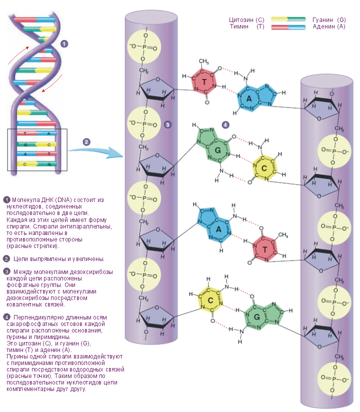
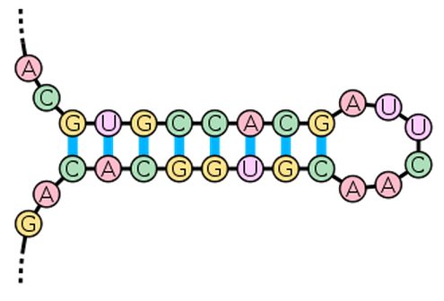

В 1953 году Уотсон и Крик опубликовали свою модель структуры ДНК, оказавшейся абсолютно верной. ДНК (дезоксирибонуклеиновая кислота) — это интересно устроенный линейный полимер. Одна нить ДНК состоит из монотонно повторяющегося сахаро-фосфатного остова (он асимметричен и имеет направление, различают 5' и 3' конец цепи), однако к каждому сахару (дезоксирибозе в случае ДНК) прикреплен один из четырех нуклеотидов (синоним слова нуклеотид — «основание») — аденин, либо тимин, либо цитозин, либо гуанин. Обычно их обозначают одной буквой — А, Т, Ц, Г. Таким образом, в ДНК есть только 4 типа мономеров, в отличие от 20 аминокислот в составе белка, что делает структуру ДНК намного проще. Дальше становится еще веселей — есть так называемое «Уотсон-Криковское спаривание оснований»: аденин может специфично связываться с тимином, а гуанин — с цитозином, образуя пары А-Т и Г-Ц (и еще Т-А и Ц-Г, разумеется), другие взаимодействий между нуклеотидами в упрощенном случае можно считать невозможными (они возможны в виде исключения при некоторых редких условиях, но для нас это не важно). Уотсон-Криковское спаривание оснований еще называется комплементарностью.

Две цепи ДНК, последовательность оснований которых комплементарна, немедленно «слипаются» в двойную спираль.Возникает вопрос: а что, если на одной цепи ДНК находятся две комплементарные области? Ответ: цепь ДНК может согнуться и комплементарные области смогут образовать двойную спираль, а вместе с местом изгиба эта структура будет называться «шпилькой» (DNA hairpin):

На чем же основано «слипание» двух комплементарных цепей ДНК (или, аналогично, двух комплементарных участков одной цепи)? Это взаимодействие держится наводородных связях. Пара А-Т соединяется двумя водородными связями, пара Г-Ц — тремя, поэтому эта пара более энергетически устойчива. Про водородные связи надо понимать следующее: энергия одной водородной связи (5 ккал/моль) не намного превосходит энергию теплового движения, а значит, одна отдельно взятая водородная связь может быть с высокой вероятностью тепловым движением разрушена. Однако, чем больше водородных связей, тем более устойчивой становится система. Это значит, что короткие участки комплементарных оснований ДНК не могут образовать устойчивую двойную спираль, она будет легко «плавиться», однако более длинные комплементарные участки уже смогут образовать стабильные структуры. Стабильность двухцепочечной структуры выражается одним параметром — температурой плавления (Тм, melting temperature). По определению, температура плавления — это температура, при которой в равновесии 50% молекул ДНК с данной длиной и последовательностью нуклеотидов находятся в двухцепочечном состоянии, а другие 50% — в расплавленном одноцепочечном состоянии. Очевидно, что температура плавления напрямую зависит от длины комплементарной области (чем длиннее — тем выше температура плавления) и от нуклеотидного состава (так как в паре Г-Ц три водородные связи, а в паре А-Т — две, то чем больше пар Г-Ц, тем выше температура плавления). Температура плавления для данной последовательности ДНК легко считается по эмпирически выведенной формуле.